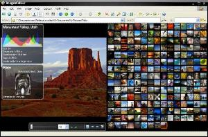
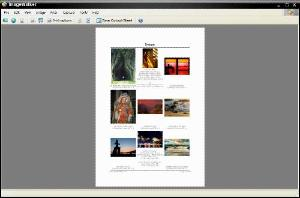
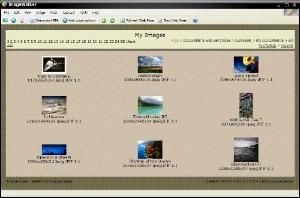

ImageWalker allows many functions to be performed such as editing, searching and batch processing. The user interface is normally in one of three modes. Modes are accessed by pressing View, Print or Web on the toolbar.
|  |
Normal view allows you to view, slideshow and manage your images. This mode is the default and has many similarities to Windows Explorer. In this mode use:
|
|
Print mode will show a preview of what thumbnails will look like when printed. In this mode you can adjust the printing options before printing a contact sheet. A contact sheet stored as image files can also be generated in this mode by clicking Save Contact Sheet. |
 |
|  |
Web mode shows a preview of what a generated web gallery might look like. The displayed gallery is only an approximation and may not always be fully functional. In this mode experiment with the web page options and click Generate HTML to create a web page gallery |